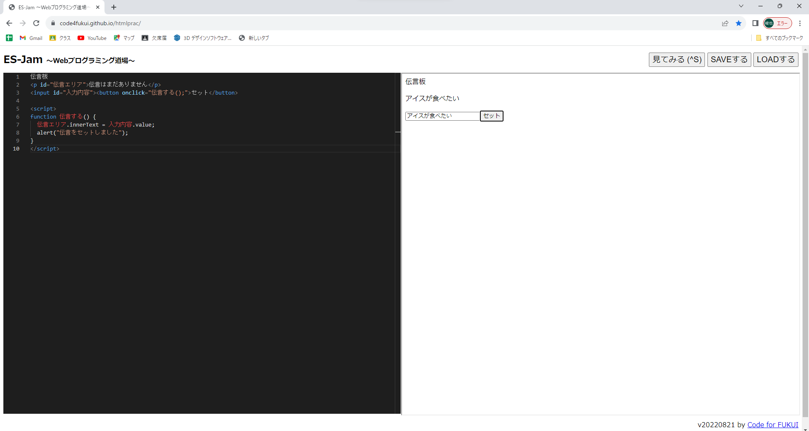
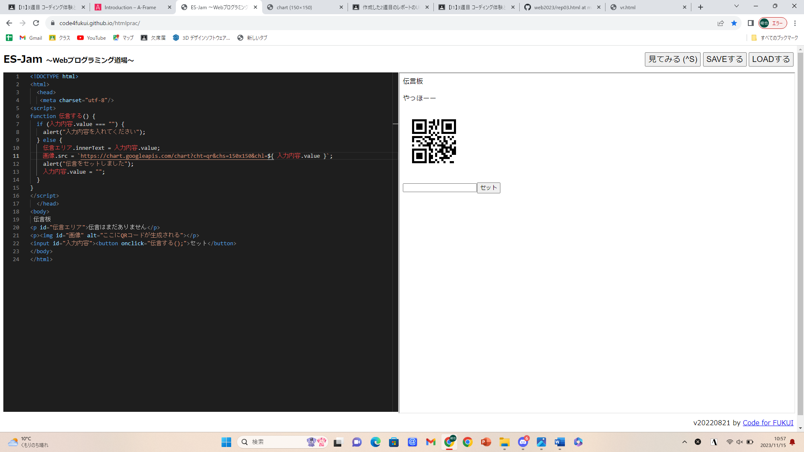

第3週目
3-1 JavaScript体験：VR空間を作る
自作した３次元空間
1.内容
webプログラミング道場でJavaScript言語によるコーディングによるプログラミング体験をした。A-FrameのホームページにあるJavaScriptのコードをWebプログラミング道場のページにペーストし、VR空間を作成した。また、ペーストしたプログラムの内容を変更し、オリジナルのVR空間を作成した。
2.感想
今回、1からプログラミングするのではなく、コードを利用してオリジナルのVR空間を作成したことで、JavaScript言語によるプログラムがどのように構成されているのかを少しだけ理解することができた。今後JavaScript言語を使って1からプログラミングできるように、まずは様々なサンプルプログラムを見たり書き換えたりして、プログラムの構成についてより深く学んでいこうと考えた。
3-2 JavaScript体験：伝言プログラムを作る

伝言板

伝言板（二次元コード生成）
1.内容
Webプログラミング道場でJavaScript言語によるWeb上で動作する「伝言板アプリ」のコーディング体験をした。伝言をセットするとその伝言が表示さるプログラムを作成した。また、何も伝言を書かずにセットすると「入力内容を入れてください」と表示され、伝言をセットするとその伝言内容が表示されるとともに二次元コードが生成され、それを読み取るとGoogleの検索バーに伝言と同じ文字が入力されている画面へと移動するプログラムも作成した。
2.感想
今回のプログラム作成は今までのように用意されたプログラムを書き換えて行うのではなく、プログラムの画像を見ながら1文字ずつ入力して行ったので、プログラムの書き方や構成、プログラミング言語の意味や働きについて学びながら作成することができた。また今回のプログラムは、セットした文字が表示されたり二次元コードが生成されたりと、どれも実用的な物だと考えた。ゆえに私は今回の実習で学んだプログラムを将来活かす機会があると考えたため、プログラムを改良したりアレンジしたりして忘れないように身につけようと思った。
3-3 JavaScriptプログラムの３次元空間の体験
1.内容
A-Frameというパッケージを利用し、インタラクティブなWeb VRプログラムの利用体験をした。VRゴーグルを装着して仮想空間に入り、コントローラーを使って空間内を移動したり、空間内にある立体図形を動かしたり、玉を飛ばしたりした。
2.感想
仮想空間を移動したり立体図形を自由に動かすことが楽しかった。また、仮想空間内で飛ばした球が壁等にぶつかり跳ね返って自分の方に来た時、本当に自分に玉が当たってしまいそうな感じがしてとても面白かった。機会があればオリジナルの仮想空間を作成し、その空間に入ってみたいと思った。